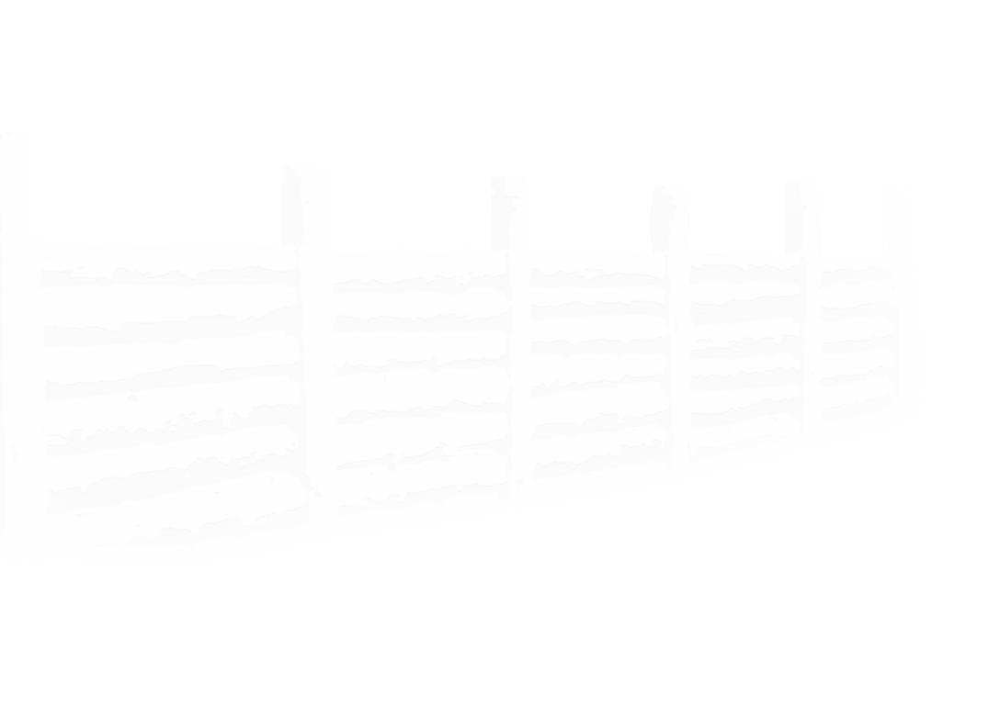
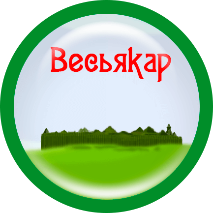

Сын Донды батыра, Весья, основал свое городище и назвал его по своему имени Весьякаром.
×
Археологический памятник VIII-XII вв. По одной из версий, которая является наиболее популярной, здесь поселился сын богатыря Донды - Весья, именем которого и было названо поселение. По другой версии, городище получило название от прибалтийско-финского племени «Весь», а слово «кар» - с удм. - городище. Рельеф местности, скорее всего, определил выбор места для поселения, ведь городища древние удмурты, как правило, с оборонительной целью «...устраивали на стрелках между двумя глубокими оврагами, с которых обозревались окрестности вокруг на много километров». Найденные при раскопках орудия труда, показывают, что весьякарцы занимались земледелием, выращивали полбу, овёс, яровую рожь, реже - ячмень, репу, горох. Также разводили домашних животных (лошадей, мелкий рогатый скот, свиней, собак) для получения мяса, молока, кожи. Большое значение имела и охота на пушных зверей: лося, северного оленя, медведя и т.д., на птиц: уток, ястреба - тетеревятника, степного луня, филина, аиста, глухаря, рябчика. Рыболовство носило случайный характер, а о занятиях бортничеством имеются лишь косвенные доказательства. Почти все необходимые в быту предметы древние удмурты изготавливали в своём хозяйстве. Для этого в их хозяйстве имелись кузнечный горн, металлургическая печь. Материалы раскопок конца 50-хг.г. прошлого века представлены также орудиями труда, украшениями из металла, кости, рога, камня, керамики. Исследования показали, «...что жили здесь около 4-5 столетий. Со временем, когда территориальные границы между народами стабилизировались и внезапные опустошительные набеги неприятелей прекратились, население стало покидать не совсем удобные для жизни укреплённые городища и основывать открытые поселения на пологих берегах рек, поближе к удобным для распашки землям, сохраняя иногда название старого поселения - городища...» Также и деревня Весьякар позднее расположилась рядом с одноимённым городищем... Но это была уже не удмуртская деревня. Из сборника: Наследники Идны: из истории МО «Адамское» [Текст]/ Сост. Е. В. Васильева, З. П. Перминова; редактор З. П. Перминова. - Глазов, 2007.